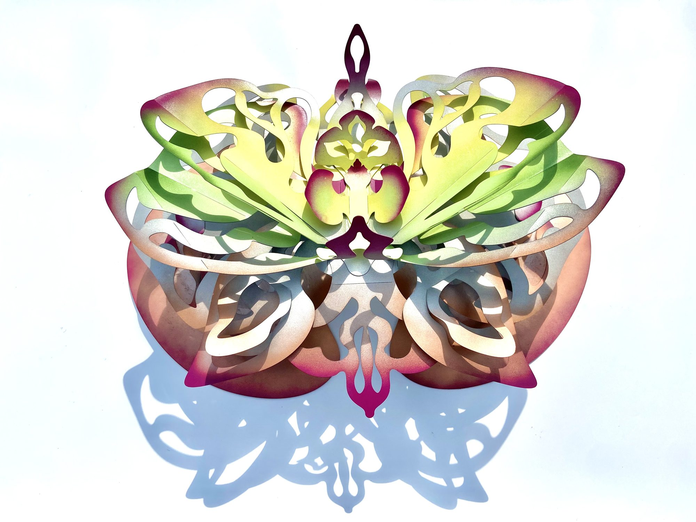

꽃 나비_ 榮蝶
- 연도Year
- 2025
- 재료Material
- EGI, 아크릴 판
- 크기Size
- 50×76×25cm
- 시리즈Series
- 금속 협업Metal Collaboration
- 협업Collaboration
- 팀 워밍 (warming)
- 프로젝트Project
- 금속 협업
자연을 사실적으로 재현하는 것이 아니라 자연이 지닌 조형적 아름다움을 나만의 방식으로 재구성하고 시각화하고자 했다. 꽃과 나비가 보여주는 시메트리와 면의 부피감, 그리고 패턴이 만들어내는 생명력은 작업의 출발점이 되었다. 특히 꽃 위에 내려앉은 나비가 만들어내는 겹의 조화는 가볍지만 밀도 있는 조형적 인상을 남겼다.
이러한 조형성을 구현하기 위해 중심선을 기준으로 좌우의 균형을 맞추고, 코어에서 대부분의 레이어를 결합하여 겹 사이의 공간감을 살렸다. 또한 곡선의 아름다움이 무겁게 느껴지지 않도록 패턴 내부를 비워내고, 얇은 두께(t)의 금속 레이어를 사용해 가벼우면서도 입체적인 구조를 만들었다.
이 작업은 자연의 형상을 그대로 모사하는 것이 아니라, 자연이 지닌 질서와 조형미를 인간의 재료와 제작 방식을 통해 새롭게 해석하고 구현하는 과정이다.
Rather than realistically reproducing nature, I wanted to reconstruct and visualize the formal beauty of nature in my own way. The symmetry and the sense of volume in the planes of flowers and butterflies, and the vitality created by their patterns, became the starting point of the work. In particular, the harmony of layers created by a butterfly alighting on a flower left a formal impression that was light yet dense.
To realize these formal qualities, I balanced the left and right sides along a central axis and joined most of the layers at the core, bringing out the sense of space between the layers. So that the beauty of the curves would not feel heavy, I hollowed out the inside of the patterns and used thin metal layers, creating a structure that is light yet three-dimensional.
This work is not about copying the forms of nature as they are, but a process of newly interpreting and realizing the order and formal beauty of nature through human materials and ways of making.